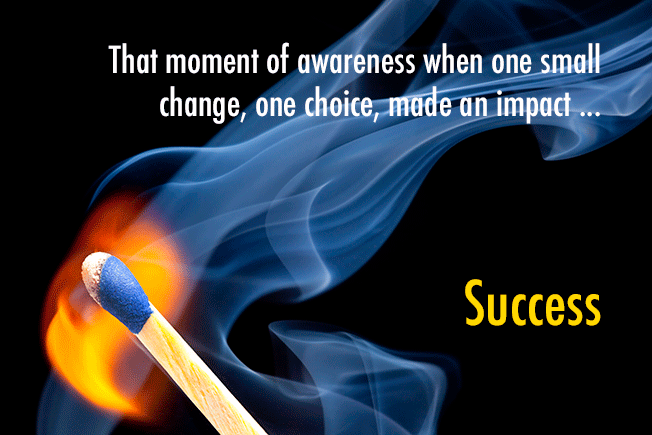

"You are successful that moment you are aware a choice made impact." – Benjamin Wechsler
Articles
Knowledge Through Awareness & Creativity
Success Network: How Aware Are You of Your Own Success?
Benjamin Wechsler | Leadership Development, Learning, Social Media
I’ll never forget the day I went to my gym on what I thought would be a normal evening workout. There was the usual crowd doing the lifts prescribed by the coach. The gym is a strength conditioning gym with free weights on one side. On the other side are several American Ninja Warrior obstacles. This particular evening, a man wheeled into the gym in his wheelchair: a double amputee. He went right up to the coach, and announced he wanted to try the Peg Board.
The Peg Board is a wooden structure mounted on the wall about 8 to 12 feet above the ground and spans about 30 feet. It has a series of pegs mounted in it at varying heights. It appears like an overgrown coat rack on much grander scale. One has to mount the first two pegs and work his or her way across, peg by peg, hanging in air. Imagine a playground monkey bars, only you are flat against a board and each peg is only a hand’s width.
Spontaneously, four guys who were working out, surrounded the man in the wheelchair, volunteered to hoist him up to the obstacle. We all watched as he hung there. Calculating. Then...he made his way across the board, peg by peg to the end! The four guys spotted him, dragging a large gymnastic safety mat underneath him. At the end, he dropped to the mat, and helped himself back to his wheelchair.
What a powerful experience for that man! What an incredible experience for the four guys helping him!
A man enters a gym in a wheelchair and everyone in the room experiences a transformation. His one small choice became a profound act.
Is success defined by the achievement of a measurable goal? Absolutely.
Today I am offering a subtler definition of success for your consideration.
You are successful the moment...that moment...when you are aware that a choice you made had impact.
It is not the results that define a success - it is the awareness. It is internal. It is personal. It is profoundly subtle. Yet its impact is like the flame from a match - it can light a birthday candle or it can light a huge bonfire.For example, what about the retail clerk in a department store who decided to make changes in her life? She decided to change her hairstyle, refresh her wardrobe for work, and began to greet her colleagues everyday with a special good morning. Then one day she earns the Employee of the Month award. Is that success?
What about the veteran Marine who returned home from the Iraqi war with both legs missing and is able to father a child?
I will be posting on these pages stories of men and women who are successful in their careers and life. Each of them were approached by me to be part of this project. Each of them experienced that moment of awareness I am writing about - “I never considered myself that successful” was a common phrase. I have learned a lot interviewing them, and they have profound experience to talk about.
I want to hear your stories. Share your successes, talk about them. If one person is transformed in the process the project will have become a success.